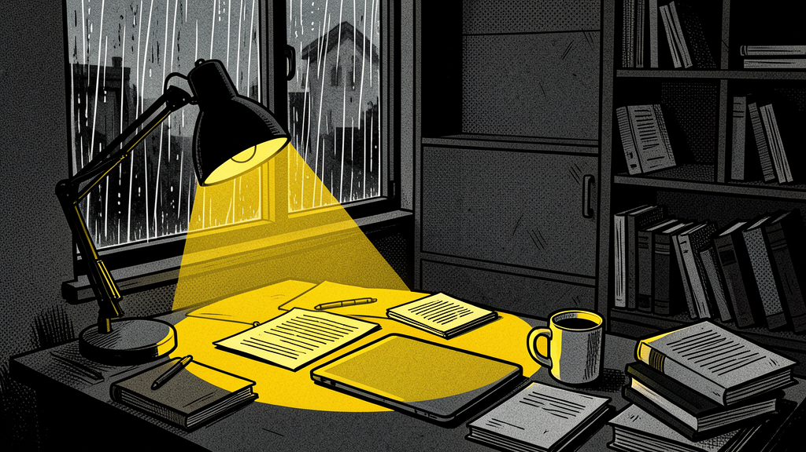

—
Initializing...
Rafaella and Marcus investigate Sofia's murder. Tattoos, ciphers, a hooded sniper, and a courier who is closer than expected.
Not every path leads to the truth. Some choices close doors forever.
The proof connecting Diana, Henrik, and Lena is now in the right hands.
Every encrypted transfer, every order, every meeting — documented.
Sofia's death is not in vain. The courier is no longer a ghost.
And the door to justice is finally open.
